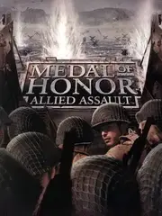

 |
|
| Tiempo de juego | 19m 51s |
| Última actividad | 30/12/2025 21:00:04 |
| Añadido | 21/9/2025 19:57:22 |
| Modificado | 3/12/2025 11:54:04 |
| Estado de finalización | Jugado |
| Librería | Playnite |
| Fuente | |
| Plataforma | PC (Windows) |
| Fecha de lanzamiento | 22/1/2002 |
| Puntuación de la Comunidad | 83 |
| Puntuación de la Crítica | 80 |
| Puntuación de usuario | |
| Género | Shooter |
| Desarrollador | 2015 |
| Editor | Aspyr Media Electronic Arts icculus.org |
| Característica | Multiplayer Single Player |
| Enlaces | Revival Official Website GOG |
| Tag | Voz y Texto en Inglés |
Antes de que existiera Call of Duty, hubo un juego que nos enseñó lo que era una guerra cinematográfica. Y todo empieza con una escena que nos dejó a todos con la mandíbula en el piso: el desembarco en la playa de Omaha. Esa misión de "Medal of Honor: Allied Assault" no era un nivel, era una experiencia visceral, un "Rescatando al Soldado Ryan" interactivo que cambió para siempre lo que esperábamos de un shooter.
El juego te pone en las botas del Teniente Mike Powell, un agente de la OSS, en una campaña espectacular que te lleva por toda Europa en plena Segunda Guerra Mundial. Infiltrarte en bases de submarinos alemanas, sabotear armamento pesado, manejar un tanque Tiger... cada misión se sentía como una escena de una película de guerra de las buenas, con momentos guionados que eran una locura para la época.
Construido sobre una versión modificada del motor de Quake III, el juego se sentía increíblemente bien. Las armas, desde la M1 Garand con su icónico "ping" al recargar hasta la Thompson y la MP40, tenían un peso y una contundencia que te metían de lleno en el combate. No era solo un espectáculo visual, era un shooter sólido como una roca.
La versión "Revival" que estamos usando no es un simple mod, es un proyecto de restauración monumental. Unos capos se tomaron el laburo de empaquetar el juego con todas las correcciones necesarias para que ande de 10 en WindoS moderno. Te soluciona de una el quilombo del widescreen, le mete mejoras gráficas y de sonido, y lo más importante: mantiene vivo el legendario multiplayer. Es la versión definitiva, curada por y para fanáticos.
El legado de Allied Assault es innegable. Es el padre del shooter cinematográfico moderno y el eslabón perdido entre los FPS de arena de los 90 y la era de Call of Duty. Tenés que jugarlo para entender el origen de la fórmula que dominó la industria y para vivir una de las campañas más revolucionarias de la historia.
• Versión Revival construida por la comunidad
• Texturas HD Redux